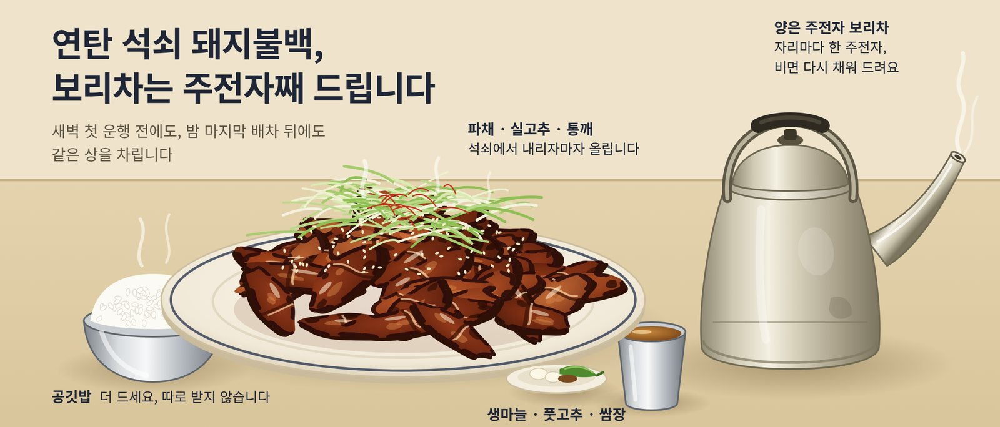

메뉴판 디자인 · SD-MN67
이 디자인으로 상담하기
직진 기사식당
새벽 5시부터 밤 10시까지 택시·화물 기사님들이 들르는 국도변 기사식당. 작업복 남색 띠와 보리차빛 종이 위에 연탄 석쇠 돼지불백과 찌그러진 양은 주전자를 크게 그리고, 정식은 운행일지처럼 칸을 나눈 표 한 장에 번호·설명·가격을 나란히 맞췄습니다.
A4 세로 · 1장 · 한국어 · 원화작업복 남색 · 보리차 미색 · 주차선 노랑석쇠 불백과 양은 주전자, 주차장 칸 그림
![직진 기사식당 메뉴판 전체. 맨 위 짙은 남색 띠 왼쪽에 연탄 석쇠 · 백반 · 셀프 반찬대라는 작은 줄, 노란 직진 화살표와 아주 큰 상호 직진, 그 옆에 조금 작은 기사식당이 있고, 오른쪽에 05:00 – 22:00, 매일 · 명절 당일만 쉽니다, 문의 000-0000-0000이 있으며, 띠 아래쪽에는 도로 중앙선처럼 노란 점선이 가로로 지나갑니다. 그 아래 보리차빛 미색 바탕 왼쪽 위에 굵은 고딕 제목 연탄 석쇠 돼지불백, 보리차는 주전자째 드립니다와 새벽 첫 운행 전에도, 밤 마지막 배차 뒤에도 같은 상을 차립니다라는 문장이 있습니다. 페이지 폭을 채운 그림은 3/4 시점의 식탁으로, 가운데 남색 테두리 선이 있는 타원형 접시에 석쇠 자국이 짙게 난 윤기 도는 간장 양념 목살 조각이 수북이 겹쳐 쌓여 있고, 꼭대기에 연두색과 흰색 파채, 붉은 실고추, 통깨가 올라가 있으며 김이 피어오릅니다. 왼쪽에는 김이 나는 고봉 스테인리스 공깃밥, 접시 앞에는 생마늘 두 쪽과 풋고추, 쌈장을 담은 작은 종지, 오른쪽에는 보리차가 담긴 스테인리스 컵과 몸통이 군데군데 찌그러진 양은 주전자가 손잡이를 세우고 서 있고 주둥이에서 김이 납니다. 그림 위에는 파채 · 실고추 · 통깨 석쇠에서 내리자마자 올립니다, 양은 주전자 보리차 자리마다 한 주전자, 비면 다시 채워 드려요, 공깃밥 더 드세요, 따로 받지 않습니다, 생마늘 · 풋고추 · 쌈장이라는 작은 설명이 붙어 있습니다. 그 아래 세 칸 띠에 1 자리에 앉아 정식을 고릅니다, 2 반찬·국은 반찬대에서 직접, 3 계산은 나가실 때 카운터에서가 있습니다. 가운데 정식 · 백반 표는 운행일지처럼 남색 머리줄과 가는 칸선으로 나뉘어 번호, 메뉴, 이렇게 냅니다, 가격(원) 네 열에 01 돼지불백 정식 9,000원(노란 처음이라면 표시), 02 고추장 불백 정식 9,500원, 03 제육볶음 정식 9,000원, 04 고등어구이 백반 10,000원, 05 김치찌개 백반 8,500원, 06 순두부 백반 8,500원, 07 오징어볶음 정식 9,500원이 한 줄 설명과 함께 있고, 모두 공깃밥 · 된장국 · 반찬 6가지 포함, 반찬대는 아침 5시와 오후 3시 두 번 새로 채운다는 메모가 있습니다. 아래 두 단에는 더 얹기로 고기 곱빼기 +4,000, 계란후라이 1,000, 라면사리 1,500, 마실 것으로 보리차 · 숭늉 셀프 무료, 식혜 2,000, 캔커피 · 탄산음료 1,500 · 2,000과 운전하시는 분들 가게라 술은 팔지 않습니다라는 안내가 있습니다. 맨 아래 남색 띠에는 주차장 · 식사하시는 동안 무료라는 제목과 함께 노란 주차선으로 그린 승용 1부터 9번 칸과 넓은 화물 칸 네 개 그림, 찾아오는 길로 승용 18대(앞마당 9 · 뒷마당 9) · 화물·대형 4칸, 국도에서 들어오자마자 오른쪽 넓은 마당, ○○시 ○○로 000이 적혀 있습니다.](page1.png)

석쇠에서 막 내린 불백 한 접시조각마다 다른 석쇠 자국과 양념 윤기, 양은 주전자의 찌그러진 자국까지 그렸습니다
바꿔 드릴 수 있는 것
- 메뉴 이름, 가격, 영업시간과 주차 칸 수
- 그림 속 접시를 제육볶음·고등어구이로
- 벽 메뉴판, 테이블 한 장 메뉴, 주차장 입구 현수막